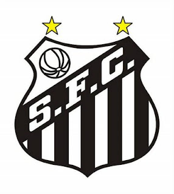

Fundado no dia 12 de abril de 1912, na rua do rosário, por um grupo de jovens idealistas, formou-se o nobre relicário do futebol, o Santos F.C. Predestinado a momentos memoráveis, o Alvinegro traz consigo uma história singular, rica e irrepreensível, repleta de grandes conquistas construídas por craques e gênios incontestáveis. O clube é contemplado de feitos históricos, acontecimentos sublimes e um DNA ofensivo que o demarca para sempre, assim como o Futebol Arte, filosofias que o acompanham desde os primórdios.
Com um legado de contribuições ao futebol, a gloriosa história do Santos que tem a Vila Belmiro (estádio Urbano Caldeira) como palco de façanhas, tornando-a um alçapão e templo do futebol, mostra também momentos de superação e reinvenção perante algumas adversidades, principalmente, nos períodos iniciais.
